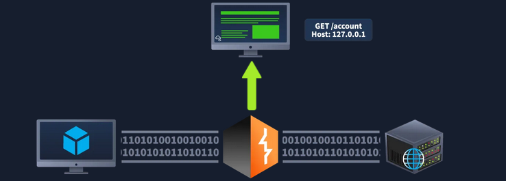
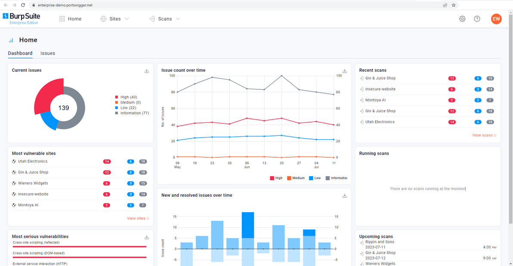
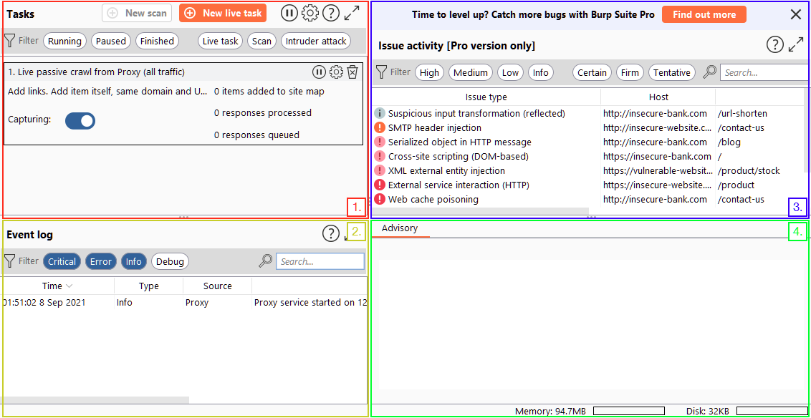
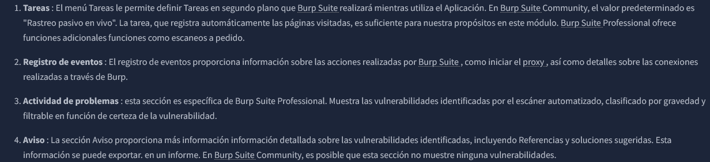
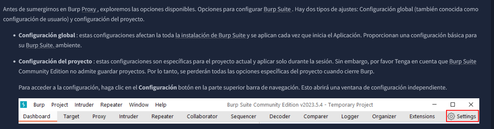
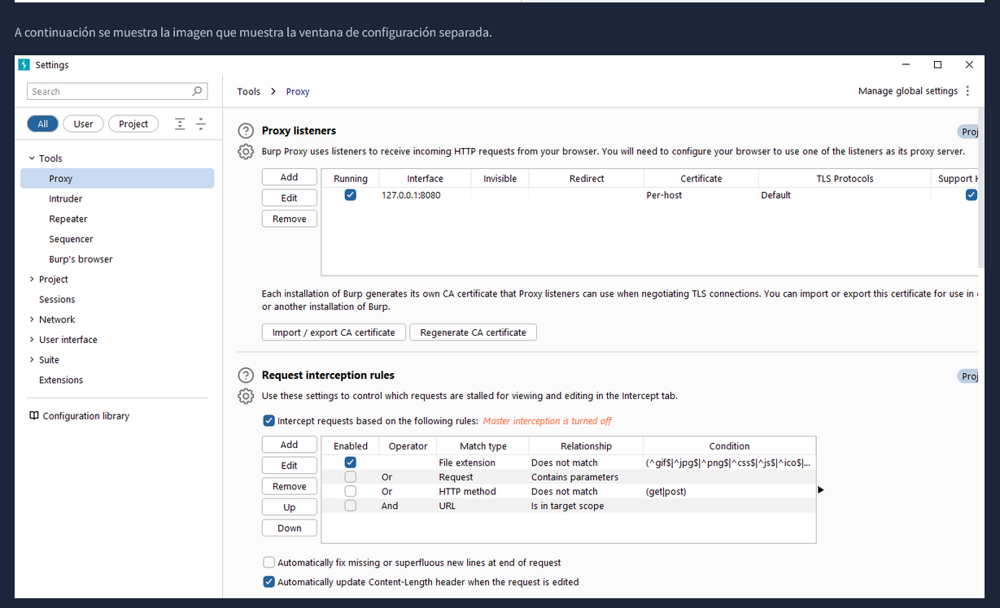
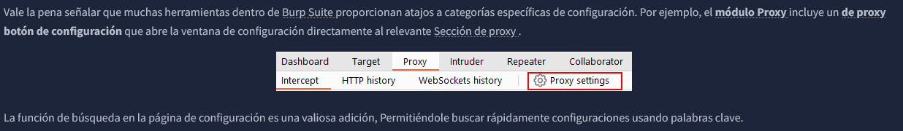
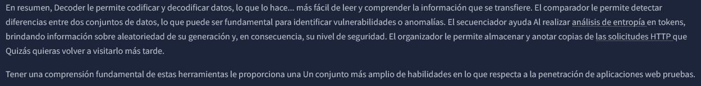

BURPSUITE
Es un marco basado en Java diseñado para servir como una solución integral para llevar a cabo las pruebas de penetración de aplicaciones web.
Se ha convertido en la herramienta estándar de la industria para las evaluaciones de seguridad de aplicaciones web y móviles, incluidas aquellas que dependen de API ( interfaces de aplicaciones de programación ).
En pocas palabras, Burp Suite captura y permite la manipulación de todo el tráfico HTTP /HTTPS entre un navegador y un servidor web. Este aspecto fundamental...La capacidad constituye la columna vertebral del marco. Al
interceptarsolicitudes, los usuarios tienen la flexibilidad de enrutarlas a varios componentesdentro del marco de Burp Suite , que exploraremos en los próximos artículos.secciones. La capacidad de interceptar, ver y modificar solicitudes web
antes llegan al servidor de destino o incluso manipulan las respuestas antes de queson recibidas por nuestro navegador hacen de Burp Suite una herramienta invaluable paraPrueba manual de aplicaciones web.

Burp Suite está disponible en diferentes ediciones. Para nuestros propósitos, se centrará en la Burp Suite Community Edition , que es de libre acceso para uso no comercial dentro de los límites legales. Sin embargo, vale la pena señalar
que Burp Suite también ofrece servicios profesionales y Ediciones empresariales, que incluyen funciones avanzadas y requieren licencia:
En resumen, Burp Suite Professional es una herramienta muy potente, lo que la hace... Una opción preferida por los profesionales del sector.
Burp Suite Enterprise , a diferencia de laLas ediciones comunitaria y profesional se utilizan principalmente para el escaneo continuo. Cuentan con un escáner automatizado que...escanea periódicamente las aplicaciones web en busca de
vulnerabilidades, de forma similar a cómoHerramientas como Nessus realizan análisis automatizados de la infraestructura. A diferencia de...otras ediciones, que permiten ataques manuales desde una máquina local, BurpSuite Enterprise reside
en un servidor y escanea constantemente el sitio web de destino.aplicaciones para detectar posibles vulnerabilidades.

Aunque Burp Suite Community ofrece un conjunto de funciones más limitado En comparación con la edición Professional, todavía ofrece una impresionante Una gama de herramientas muy valiosas para probar aplicaciones web. Exploremos algunas de las características clave:
Al abrir Burp Suite por primera vez, es posible que te encuentres con una Pantalla con opciones de entrenamiento. Se recomienda revisarla. estos materiales de capacitación cuando tenga
tiempo.
Si no ves la pantalla de entrenamiento (o en sesiones posteriores), Se le presentará el Burp Dashboard, que puede parecer abrumador. Al principio. Sin embargo, pronto se volverá familiar.
El panel de Burp se divide en cuatro cuadrantes, como se indica en orden en sentido contrario a las agujas del reloj comenzando desde la parte superior izquierda:





